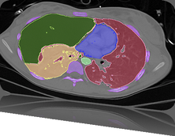

3rd IEEE Symposium on Biological Data Visualization
13-14 October 2013 // Atlanta, GA @ IEEE VIS
13-14 October 2013 // Atlanta, GA @ IEEE VIS

Program
| Sunday October 13th | |
|---|---|
| 8:30 |
Welcome & Keynote Session Scientific Publishing in a Technological Age Daniel Evanko |
| 10:10 | Coffee Break |
| 10:30 |
Paper Talks 1 - Visualizing Sequence and Omics Data invis: Exploring High-dimensional Sequence Space from In Vitro Selection Large-Scale Multiple Sequence Alignment Visualization through Gradie COMBat: Visualizing co-occurrence of annotation terms |
| 12:00 | Lunch Break |
| 14:00 |
Paper Talks 2 - Visualizing Cellular and Molecular Data Primer Talk*: Cellular and Molecular Data
Robust Detection and Visualization of Cytoskeletal Structures in Fibrillar Scaffolds from 3-Dimensional Confocal Images
Do Young Park, Desiree Jones, Nicanor I. Moldovan, Raghu Machiraju, Thierry Pecot
PresentaBALL - a Powerful Package for Presentations and Lessons in Structural Biology
Stefan Nickels, Daniel Stackel, Sabine C. Mueller, Hans-Peter Lenhof, Andreas Hildebrandt, Anna Katharina Dehof
From Biochemical Reaction Networks to 3D Dynamics in the Cell: the ZigCell3D Modeling, Simulation and Visualisation Framework
Pablo de Heras Ciechomski, Michael Klann, Robin Mange, Heinz Koeppl
The Molecular Control Toolkit: controlling 3D molecular graphics via gesture and voice
Kenneth Sabir, Christian Stolte, Bruce Tabor, Sean O'Donoghue
|
| 15:40 | Coffee Break |
| 16:15 |
Poster Session |
| 18:00 | BioVis/LDAV Reception |
| Monday October 14th | |
|---|---|
| 8:30 |
Paper Talks 3 - Visualizing Networks and Interactions Primer Talk*: Networks and Interactions
MoClo Planner: Interactive Visualization for Modular Cloning Bio-Design
Orit Shaer, Consuelo Valdes, Sirui Liu, Kara Lu, Traci Haddock, Swapnil Bhatia, Douglas Densmore, Robert Kincaid
VisNEST - Interactive Analysis of Neural Activity Data
Christian Nowke, Maximilian Schmidt, Sacha J, van Albada, Jochen M. Eppler, Rembrandt Bakker, Markus Diesmann, Bernd Hentschel, Torsten Kuhlen
neuroMap - Interactive Graph-Visualization of the Fruit Fly's Neural Circuit
Johannes Sorger, Katja Baehler, Florian Schulze, Tianxiao Liu, Barry Dickson
Genome-wide detection of sRNA targets with rNAV
Jonathan Dubois, Amine Ghozlane, Patricia Thabault, Isabelle Dutour, Romain Bourqui
|
| 10:10 | Coffee Break |
| 10:30 |
Paper Talks 4 - Visualizing Population and Function Primer Talk*: Population and Function
Leveraging Wall-sized High-Resolution Displays for Comparative Genomics Analyses of Copy Number Variation
Roy Ruddle, Waleed Fateen, Darren Treanor, Peter Sondergeld, Phil Quirke
HumMod Browser: An Exploratory Visualization Tool for the Analysis of Whole-Body Physiology Simulation Data
Keqin Wu, Jian Chen, William Pruett, Robert Hester
Visual Cleaning of Genotype Data
Jessie Kennedy, Martin Graham, Trevor Paterson, Andy Law
|
| 12:00 | Lunch Break |
| 14:00 |
Contests Session Data Contest Fixing TIM: Identifying Functional Mutations in Protein Families through the Interactive Exploration of Sequence and Structural Data Visual Analysis of Protein Sequence Mutations with RINalyzer - A BioVis Contest Contribution Mu-8: Visualizing Differences between a Protein and its Family Visualizing Sequence Conservation in Protein Families Seeing the results of a mutation with a vertex-‐weighted hierarchical graph VERMONT: Visualizing mutations and their effects on protein physicochemical and topological property conservation Introduction to the 2014 Contest - Resting State FMRI Redesign Contest
Redesigning the traditional logo plots
Heike Hofmann
Sequence Bundles
Marek Kultys
Redesign of sequence logos
Ryo Sakai
|
| 15:40 | Coffee Break |
| 16:15 |
Challenges Session Engaging today’s genomics resources |
| 17:30 | Awards Ceremony & Closing Remarks (until 5:55 pm) |
* All paper sessions start with a Primer Talk to introduce the biological background and major domain challenges that are relevant to the papers presented in that session. Primer Talks are aimed at a general audience to make the BioVis paper presentations more accessible to visualization researchers without a background in biology.
Follow us on Twitter
BioVis 2013 is an official symposium of


BioVis 2013 is affiliated with

Join ISCB and get a 20% member discount at BioVis'13.
BioVis 2013 Supportes
Silver:

Bronze:


Deadlines
Paper Deadline
- Abstract:
April 30, 2013
- Full Paper:
May 7, 2013
Poster Deadline
August 2, 2013
Data Contest Deadline
August 2, 2013
Redesign Contest Deadline
August 2, 2013